Advanced Unified Redundant Outrunner Architecture for neXt-generation Electric Propulsion
Modern heavy-lift UAV and eVTOL platforms demand electric motors with continuous specific power exceeding 5 kW/kg at efficiencies above 95%. Current state-of-the-art BLDC/PMSM motors face three fundamental barriers:
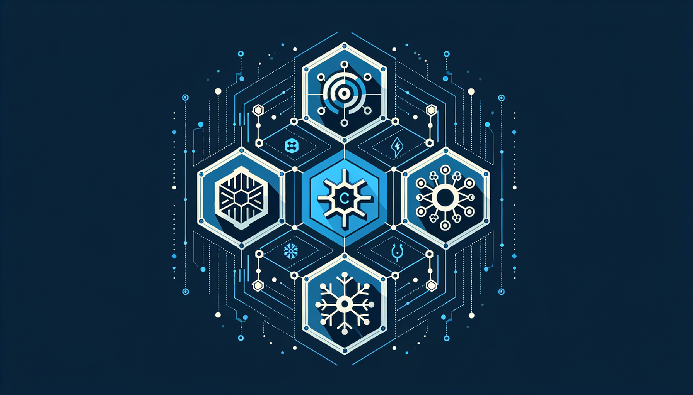
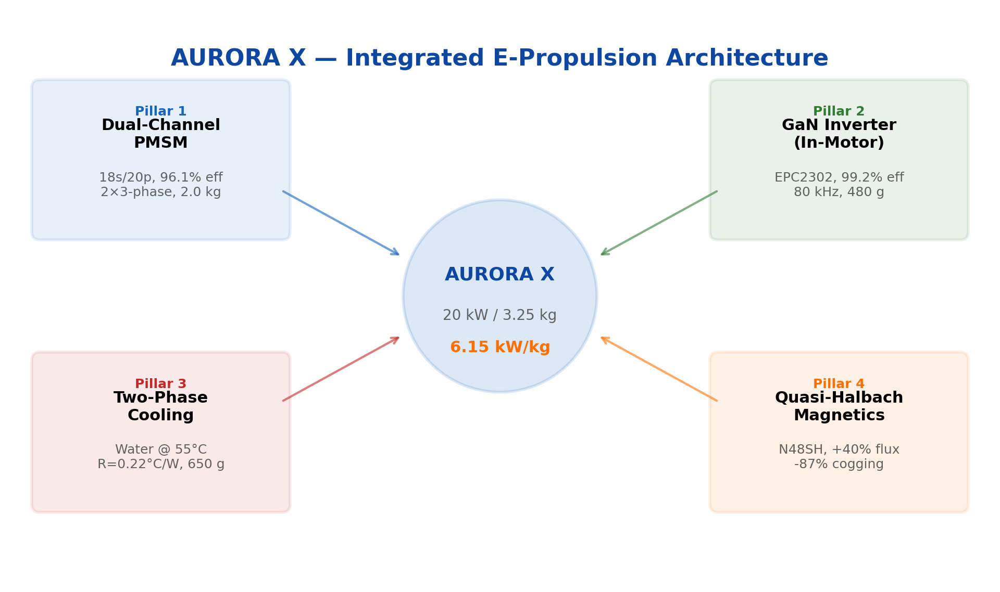
Two independent 3-phase channels (12s/10p, kw=0.933) share stator and rotor. Fail-operational: 50% power retained on single-channel failure. 30° electrical shift minimizes torque ripple in degraded mode.
Annular PCB with EPC2302 GaN FETs (100V, 1.8 mΩ). 2-level topology, 80 kHz switching, 99.2% efficiency, 480 g total. Power loop inductance <1 nH eliminates EMI at source.
Sealed thermosyphon (water at 0.16 bar, Tsat=55°C). Heat transfer coefficient 12,000 W/m²K on micro-textured surfaces — 10× above water-jacket cooling. Rtotal=0.22 °C/W.
N48SH NdFeB profiled segments: +40% airgap flux density, −87% cogging torque, ≤3% torque ripple target. Demagnetization margin ≥20% at 150°C peak current.
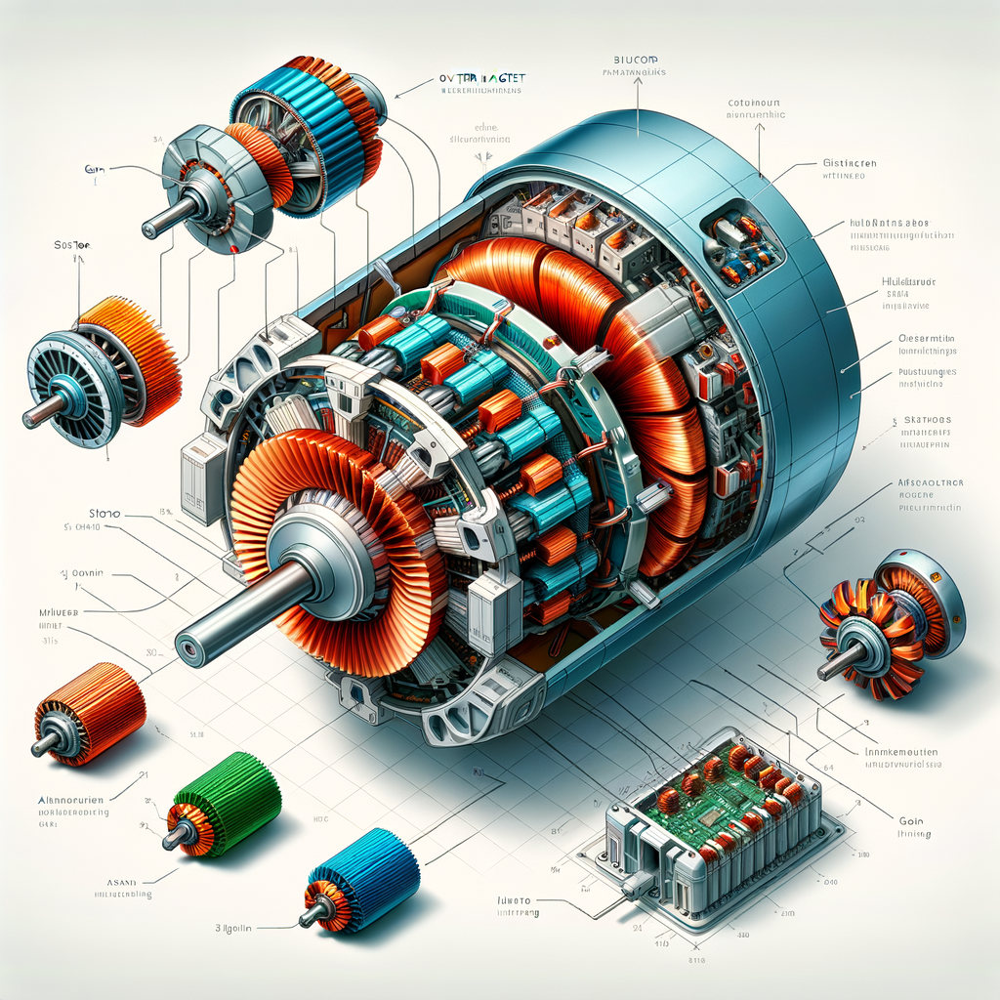
| Parameter | Value |
|---|---|
| Efficiency (continuous) | 99.2% |
| Efficiency (peak) | 99.0% |
| Total inverter losses | 157 W (cont.) / 314 W (peak) |
| Total mass | 480 g |
| Switching frequency | 80 kHz (inaudible) |
| Cooling Method | Rtotal (°C/W) | Max Cont. Power | Added Mass |
|---|---|---|---|
| Air (forced) | 0.77 | 6 kW | 0 kg |
| Water jacket | 0.29 | 14 kW | 1.5–2.0 kg |
| AURORA X two-phase | 0.22 | 20 kW | 0.5–0.8 kg |
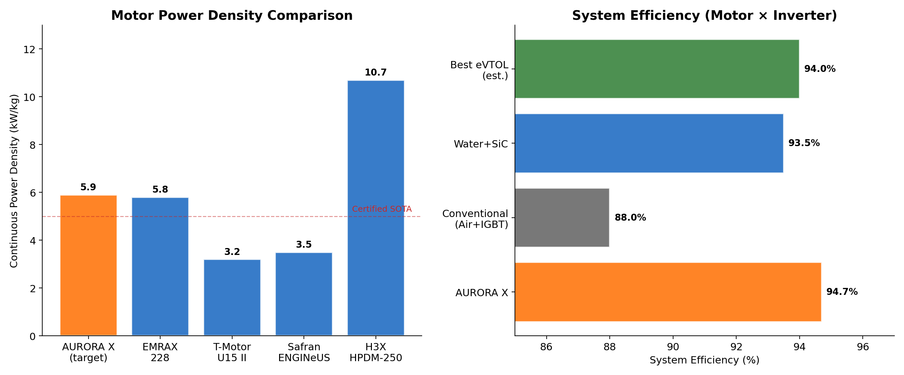
| Motor / System | Type | Cont. kW/kg | Efficiency | Cooling | Integ. Inv. | Redundancy |
|---|---|---|---|---|---|---|
| T-Motor U15 II | Outrunner | 2.4 | ~88% | Air | No | No |
| EMRAX 228 | Axial flux | 5.8 | 96% | Liquid | No | No |
| H3X HPDM-250 | Radial+inv | 10.7 | 92.9% sys | Liquid | Yes (SiC) | No |
| Safran ENGINeUS | PMSM | ~5.0 | — | Air | Yes | No |
| AURORA X | Coaxial | 5.9 | 94.7% | Two-phase | Yes (GaN) | Yes (dual) |
| ID | Objective | KPI | Target | Verification |
|---|---|---|---|---|
| O1 | Integrated propulsion core | TRL | 5–6 | System-level test |
| O2 | Target power density | Specific power | ≥5.0 kW/kg | Dyno measurement |
| O3 | Two-phase thermal mgmt | Twinding | ≤150°C @ 20 kW | Thermocouples + IR |
| O4 | Minimize torque pulsation | Torque ripple | ≤3% | Torque transducer |
| O5 | Integrated GaN inverter | System eff. | ≥95% | Power analyzer |
| O6 | Dual-channel redundancy | Fault response | <5 ms, 50% | HIL fault injection |
| O7 | Digital twin control | Temp. accuracy | ±5°C | Calibrated model |
Phase 1: EM Design (M1–M10). Parametric 2D/3D FEA (ANSYS Maxwell / MotorCAD) optimizes geometry. Generates flux maps, loss maps, torque waveforms.
Phase 2: Thermal & Structural (M3–M14). CFD (ANSYS Fluent) with VOF method for two-phase flow. Structural FEA for housing integrity. Updates EM model with temperature-dependent properties.
Phase 3: Prototype (M14–M20). Annular GaN PCB, custom Halbach rotor, machined housing with integrated vapor chamber.
Phase 4: Validation (M18–M24). Dyno testing, efficiency maps, thermal profiles. Bayesian parameter updating closes the digital twin loop.
| Parameter | Value | Notes |
|---|---|---|
| Rated power | 20 kW cont. / 30 kW peak (60s) | Dual-channel |
| DC bus voltage | 96V | 24S LiPo |
| Rated / Max speed | 5,000 / 8,000 RPM | FW range 1:1.6 |
| Rated torque | 38.2 N·m | At 5,000 RPM |
| Topology | Outer-rotor SPM | Quasi-Halbach |
| Stator / Rotor OD | 100 / 74 mm | Compact |
| Active length | 74 mm | L/D ≈ 0.74 |
| Slots / Poles | 12s / 10p | kw1 = 0.933 |
| Magnet | N48SH (Br=1.38 T) | 3.5 mm, Halbach |
| Bg | 1.094 T | Halbach-enhanced |
| Lamination | NO20 (0.20 mm) | 833 Hz operation |
| Current density | 19 A/mm² | Two-phase cooled |
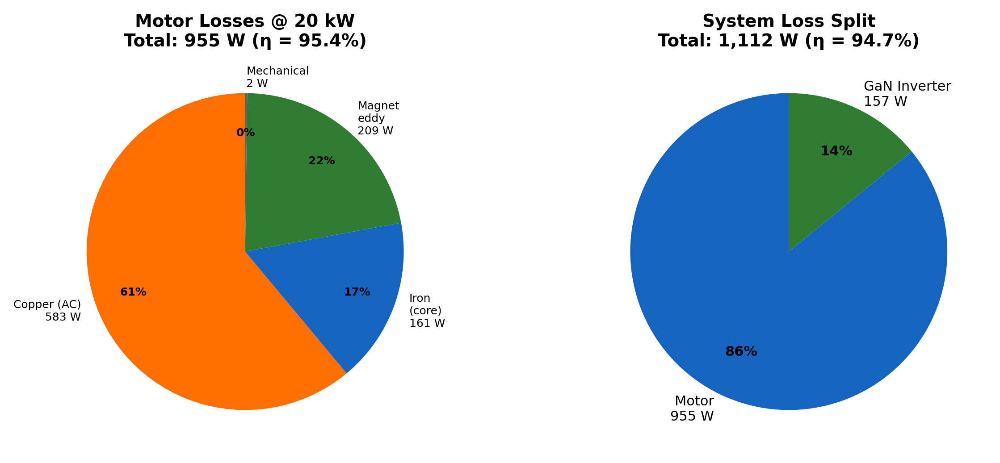
| Source | Losses (W) | % | Location |
|---|---|---|---|
| Copper (AC, 150°C) | 583 | 52.4% | Stator windings |
| Iron (NO20, ×1.5 build) | 161 | 14.5% | Stator core |
| Magnet eddy currents | 209 | 18.8% | Halbach segments |
| Mechanical | 2 | 0.2% | Bearings, windage |
| Motor subtotal | 955 | 85.9% | ηmotor = 95.4% |
| GaN inverter | 157 | 14.1% | Annular PCB |
| System total | 1,112 | 100% | ηsys = 94.7% |
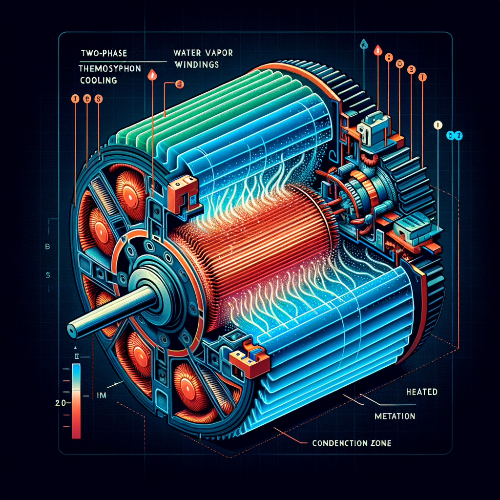
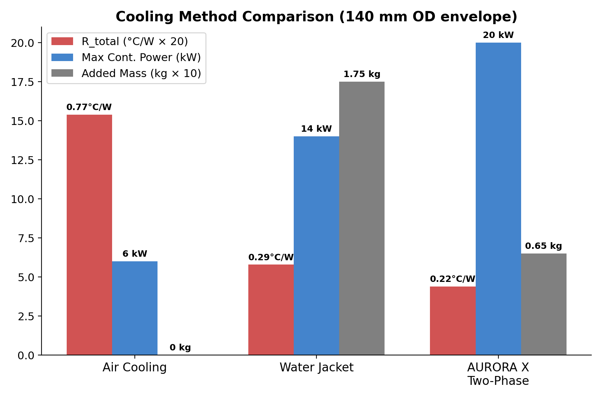
| Location | Temperature | Limit | Margin |
|---|---|---|---|
| Winding hotspot | 145°C | 150°C (Class H) | 5°C |
| Rotor magnets | 105°C | 120°C (N48SH) | 15°C |
| GaN junction | 119°C | 150°C | 31°C |
| Bearing (DE) | 85°C | 120°C | 35°C |
The 7-node LPTN runs on the control MCU at 100 Hz. MPC-based predictive derating improves peak torque utilization by +64% vs. reactive thermal limiting.
MCU: STM32G4 (Cortex-M4F, 170 MHz) with CORDIC and FMAC accelerators. DroneCAN/Cyphal telemetry at 100 Hz.
| Pillar | Precedent | Gap Addressed |
|---|---|---|
| Dual-channel | Joby Aviation (236 kW) | Scale to 20 kW with full FDI |
| Integrated inverter | H3X HPDM-250 (SiC) | GaN at 100V for optimal FOM |
| Two-phase cooling | Georgia Tech (26 A/mm²) | Integration into production motor |
| Halbach magnets | EMRAX, Evolito | Radial-flux with profiled segments |
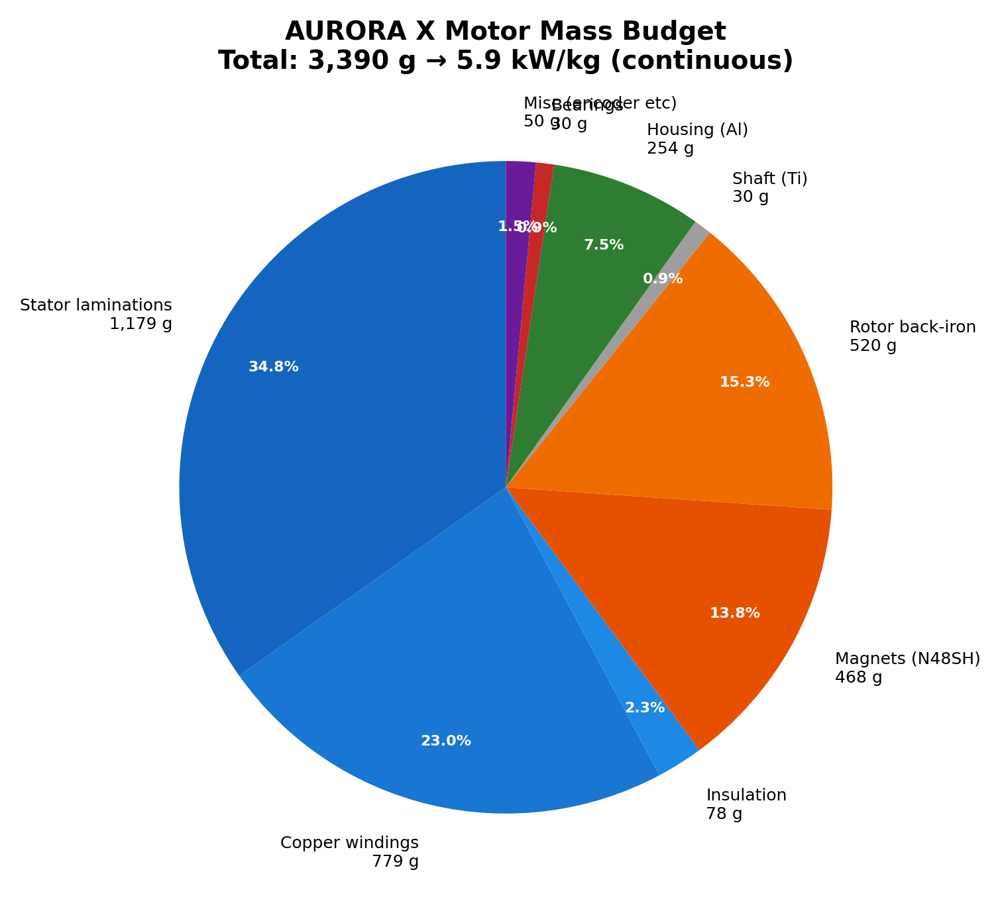
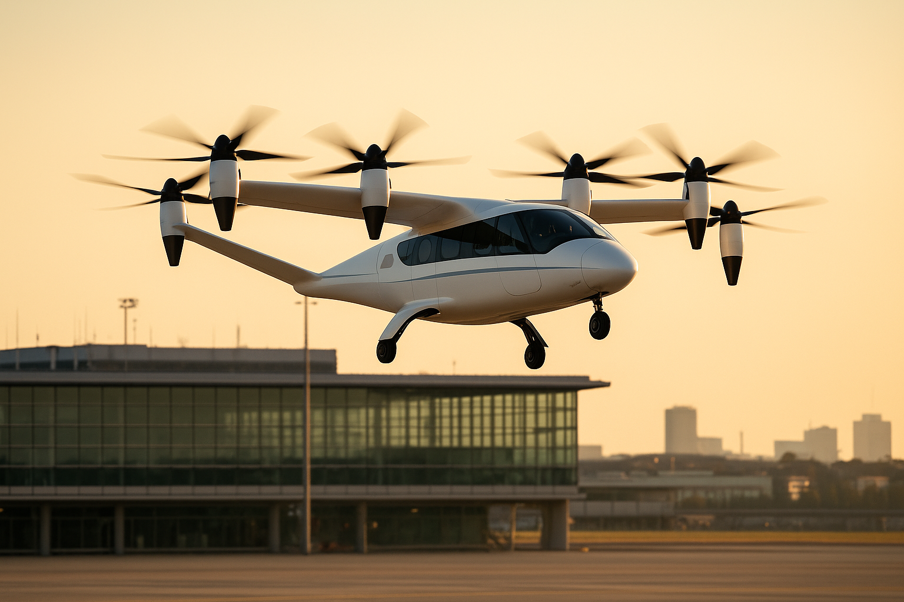
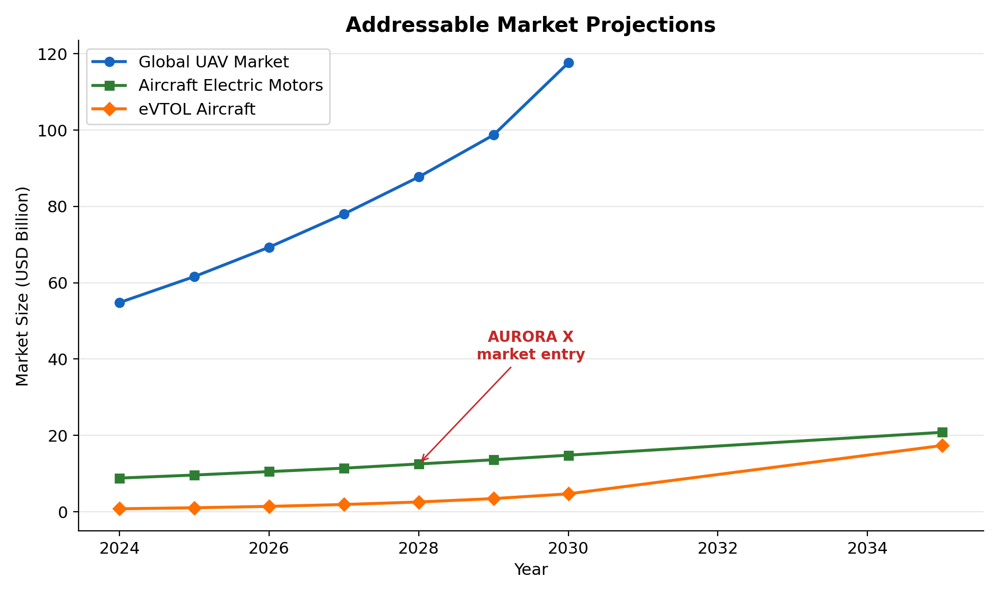
Global UAV market: USD 117.6B by 2030 (CAGR 12.5%). eVTOL segment: USD 17.34B by 2035 (CAGR 35.3%). Aircraft electric motors: USD 20.8B by 2034. Over 50,000 eVTOL expected by 2030, each requiring 4–36 motors.
| Segment | Market (2030) | AURORA X Value Proposition |
|---|---|---|
| Heavy-lift UAV (10–50 kW) | EUR 4.2B | Only integrated drive with redundancy |
| eVTOL propulsion | EUR 2.8B | Certified-ready fail-operational arch. |
| Industrial robotics | EUR 1.5B | Compact, high-torque, plug-and-play |
| Impact | Target |
|---|---|
| Revenue from licensing | EUR 2–5M |
| Direct jobs created | 15–25 |
| Patents filed | 2–3 (EPO → PCT) |
| Journal publications | 4–6 (Gold OA) |
| Conference presentations | 8–10 |
| CO₂ reduction enabled | 500–1000 t/year |
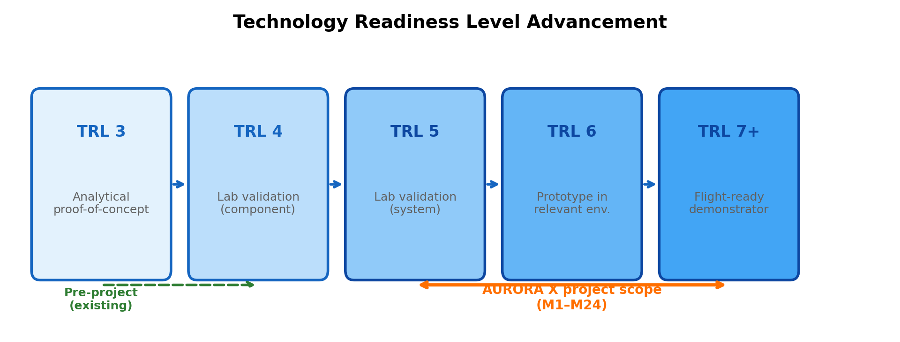
| WP | Title | Lead | Months | PM | Key Deliverable |
|---|---|---|---|---|---|
| WP1 | System Architecture | Lead EM | M1–M4 | 12 | D1.1: Architecture Spec |
| WP2 | EM Design & Optimization | Lead EM | M2–M10 | 20 | D2.1: Validated EM Model |
| WP3 | Thermal Management | Thermal Eng. | M3–M12 | 16 | D3.1: Cooling Prototype |
| WP4 | Integrated Power Electronics | PE Lead | M6–M16 | 16 | D4.1: Annular GaN PCB |
| WP5 | Control Software & Digital Twin | Embedded | M8–M20 | 14 | D5.1: FOC+DT Firmware |
| WP6 | Prototype & Validation | Mech. Eng. | M14–M24 | 14 | D6.1: TRL 5–6 Demonstrator |
| ID | Title | Month | Success Criterion |
|---|---|---|---|
| MS1 | Architecture Frozen | M4 | All interfaces defined, requirements baselined |
| MS2 | EM Validated | M10 | FEA: ≥95% efficiency, ≤3% torque ripple |
| MS3 | Concept Proven | M12 | Cooling: Rtotal ≤0.25 °C/W on bench |
| MS4 | Hardware Ready | M16 | GaN PCB passes 20 kW functional test |
| MS5 | Control Loop Closed | M20 | FOC + DT on hardware, sensorless >1000 RPM |
| MS6 | TRL 5–6 Achieved | M24 | Full dyno: ≥5 kW/kg, ≥95% η, 100h endurance |
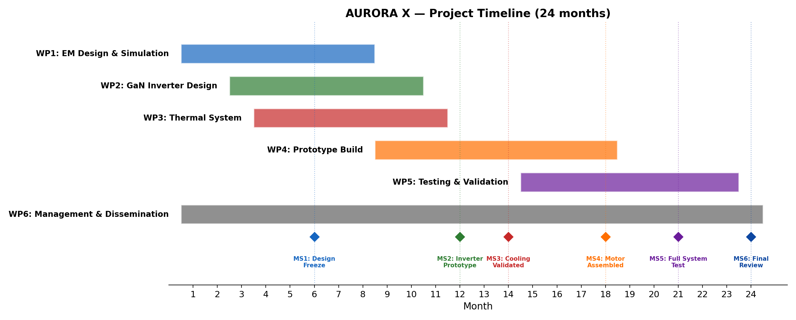
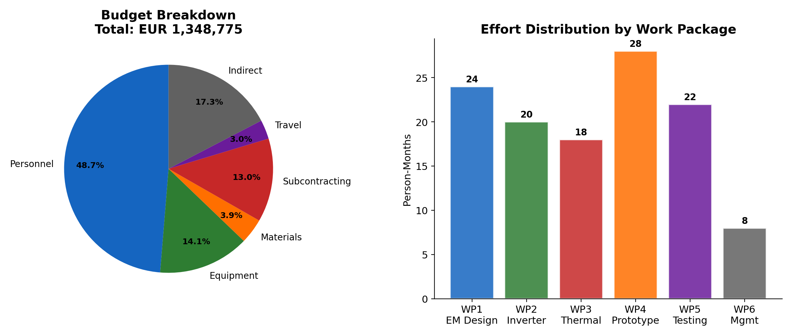
| Category | Amount (EUR) | % |
|---|---|---|
| Personnel (92 PM) | 657,000 | 48.7% |
| Equipment | 190,000 | 14.1% |
| Materials | 52,020 | 3.9% |
| Subcontracting | 175,000 | 13.0% |
| Travel & dissemination | 40,000 | 3.0% |
| Indirect costs (25%) | 234,755 | 17.4% |
| TOTAL | 1,348,775 | 100% |
EIC Transition funding rate: 100%. Requested EU contribution: EUR 1,348,775.
| Risk | P×I | Mitigation |
|---|---|---|
| R01: Thermal targets not met | High | 30% design margin; fallback to hybrid single-phase+spray |
| R02: EMI exceeds limits | High | Multi-layer suppression; pre-compliance at M9 |
| R03: Magnet quality | High | Dual-source qualification; 10% surplus |
| R04: WBG supply chain | Critical | Early ordering M1; 2nd source; Si IGBT fallback |
| R05: Weight exceeded | High | Component-level mass budget; topology opt. |
| R06: Key person leaves | High | Named deputies; knowledge documentation |
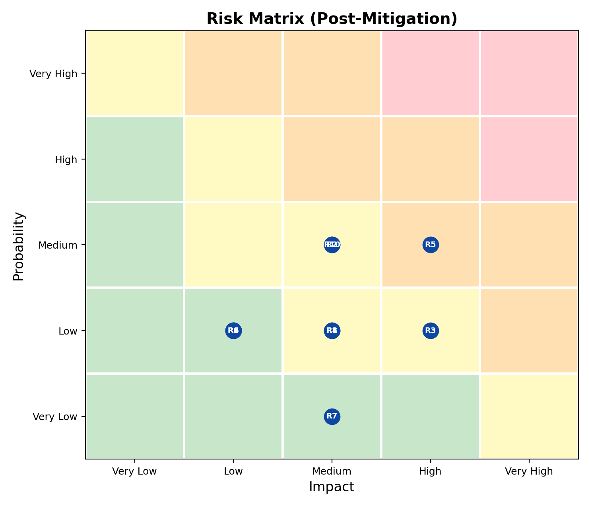
Design review gates: SRR M4, PDR M10, CDR M16, TRR M22, FR M24.
| Role | Expertise | PM |
|---|---|---|
| Lead EM Design Engineer | PMSM design, FEA, Halbach optimization | 24 |
| Power Electronics Lead | SiC/GaN, PCB design, EMI | 20 |
| Thermal Engineer | CFD, two-phase systems, heat pipe design | 18 |
| Embedded Software Engineer | FOC, MPC, real-time, DroneCAN | 16 |
| Mechanical Engineer & Test | Structural analysis, manufacturing, dyno | 14 |
This project does not raise ethical concerns. No human subjects, personal data processing, or dual-use technology involved.
| # | Figure | Section |
|---|---|---|
| 1 | System Architecture | 1.2 |
| 2 | Power Density & Efficiency Benchmarking | 1.3 |
| 3 | Motor and System Loss Budget | 1.4 |
| 4 | Cooling Method Comparison | 1.5 |
| 5 | System Mass Budget | 1.5 |
| 6 | Market Projections | 2.1 |
| 7 | TRL Roadmap | 2.3 |
| 8 | Project Timeline (Gantt) | 3.1 |
| 9 | Budget Breakdown | 3.2 |
| 10 | Risk Matrix | 3.3 |